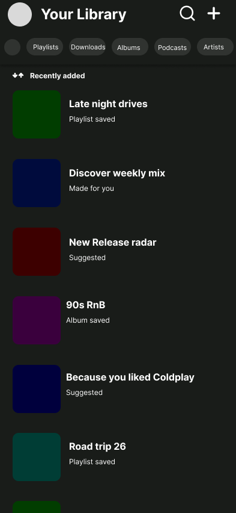
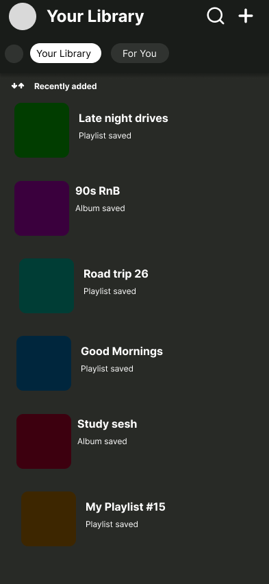
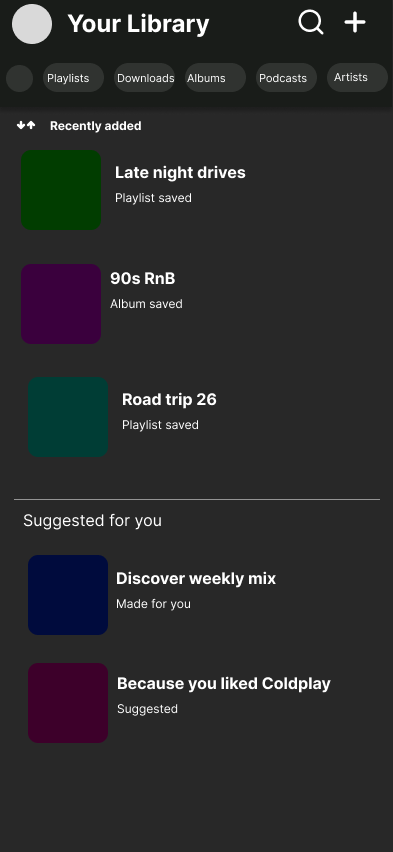
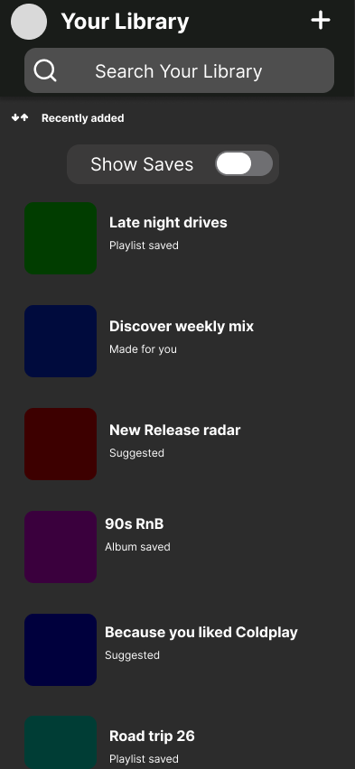
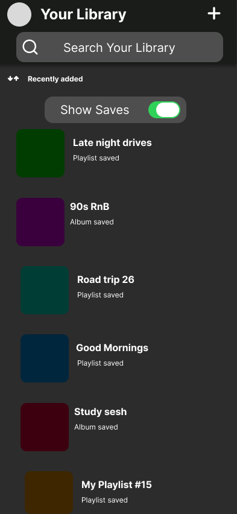
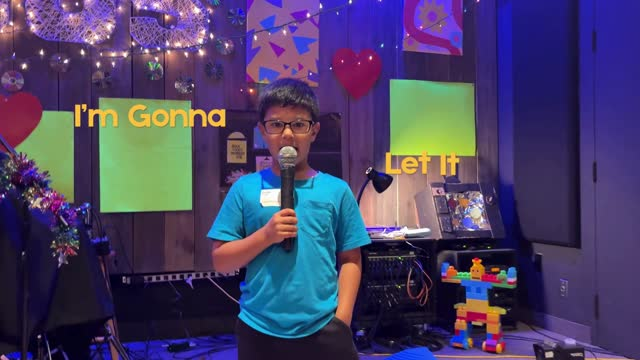
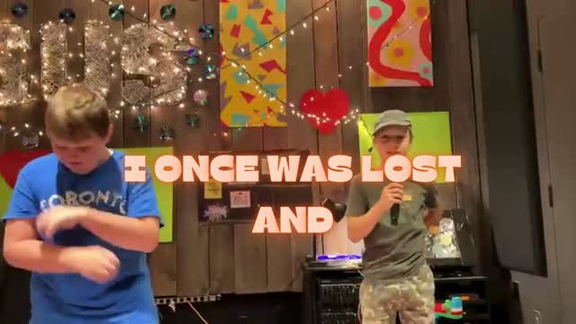
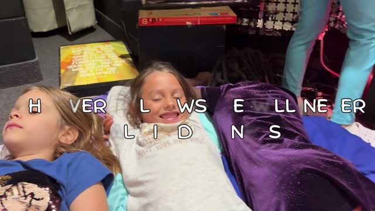

Product design — Toronto / hybrid
I'm Deji, a second-year Computer Co-op Science student at Brock University with a background in creative production. I'm building a foundation in product design — starting with real problems, not just polished screens.
Selected work
Spotify's Library screen mixes saved playlists and albums with algorithmic "suggested for you" content — a real complaint from users with large collections who can no longer find what they actually saved.
I explored three directions: a tabbed split between saves and recommendations, a filtered list with suggestions demoted to the bottom, and a search-first view with a "show only your saves" toggle. I chose the third: it keeps Spotify's discovery surface fully intact by default, while giving people a direct way to cut through it when they just need to find something.





Scroll to see the full process — from the problem through three directions to the final toggle interaction.
Over one summer, I produced and co-directed music video projects for three separate groups of about 20 children each — recording vocals and backing tracks in BandLab, then directing each shoot on a tight schedule.
The real design problem was pacing: keeping a shared creative vision consistent across three separate groups and skill levels, while making decisions fast enough to keep kids engaged. I made calls on shot sequencing, framing, and edit pacing under real time pressure — and learned how much a clear, simple plan matters more than a perfect one.

This Little Light of Mine

Let There Be Light

Jesus Said I Am the Light of the World
About
I'm studying Computer Science at Brock University, which gives me an appreciation for what's actually feasible to build and how to talk with engineers about trade-offs. Outside coursework, I've spent time in creative production — Adobe Photoshop, Illustrator, and Premiere Pro — and in fast-paced customer-facing roles that taught me to listen closely to what people actually need.
Get in touch
I'm looking for a design internship where I can learn by doing real, shipped work. If a project here is interesting to you, I'd love to hear from you.